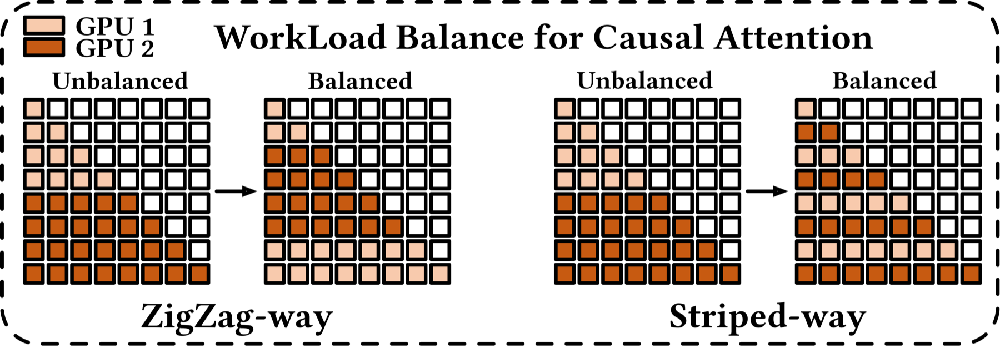

Distributed Training · 分布式训练系统入门
从通信原语
到并行策略
一张卡放不下的模型，是怎么在上千张卡上训起来的？—— 以 Megatron-LM 为例
① 通信原语（点击看动画）
② 训练 Workflow
③ 各路并行
④ 显存优化
≈ 20 min · → / 空格 翻页 · F 全屏
00路线图：由浅入深
先掌握最底层的"积木"——通信原语；再看一次训练迭代长什么样；然后理解各种并行怎么用这些积木把模型切开；最后讨论几个进阶扩展问题。
PART 1 · 基础积木
01通信原语：数据在卡之间怎么流动（可点击交互）
PART 2 · 训练流程 & 显存基础
02单卡一次迭代：前向 / 反向 / 优化器
03从一个 Linear 看 激活 / 权重 / 输入
04重计算：用算力换显存
PART 4 · 进阶讨论
14-16Muon · 长序列 · FSDP vs TP+PP
PART 3 · 并行策略
05·06总览 + 动画演示（点名字 / 阶段切换）
07·08数据并行 DP + ZeRO / FSDP
09·10张量并行 TP + 序列并行 SP
11流水线并行 PP（1F1B）
12·13上下文并行 CP · 专家并行 EP
PART 1
通信原语
所有并行策略，最终都由这几个"集合通信"操作拼出来。先看清每个操作到底把数据搬去了哪。
下一页：点任意一个算子，看它的传输过程。
01通信原语 · 点一下看它怎么搬数据
一对多 / 多对一
Broadcast
Scatter
Gather
Reduce
多对多（训练主力）
All-Gather
Reduce-Scatter
All-Reduce
All-to-All
点对点
Send / Recv
Ring Send/Recv
语义 / 在干嘛每个色块代表一份数据，颜色表示它最初属于哪张卡。绿色 = 已被规约(求和)的结果。
通信量 & 用途选择左侧算子查看。
PART 2
训练 Workflow
在把模型切开之前，先看清"没切"时，一次训练迭代到底做了哪几步。
02单卡：一次训练迭代的 5 步
数据流
显存里都放了啥（Adam, 混合精度）
| 内容 | 大小 | 说明 |
|---|
| 参数 fp16 | 2P | 模型本体（P = 参数量） |
| 梯度 fp16 | 2P | 反向产出 |
| 优化器状态 | 12P | fp32参数+m+v |
| 激活值 | ∝ b·s·h·层数 | 前向缓存，反向要用 |
两个大头：模型状态固定 16P（7B≈112GB）；激活随 batch·序列长度增长，长序列时甚至超过模型本身。
→ 单卡装不下，于是需要并行（切模型状态）和重计算（省激活）。
03反向要存什么？—— 从一个 Linear 看清 激活 / 权重 / 输入
Linear 的前向 & 反向
"激活" 到底是什么
Autograd 前向时，会把反向计算梯度要用到的张量存进 ctx（save_for_backward）。这些被缓存的中间张量，就是激活 (activation)。
- Linear：存输入 X（算 dW=Xᵀ·dY 要用）。
- GeLU/SiLU 存输入；Softmax/LayerNorm 存输出或统计量；Dropout 存 mask。
- 权重 W、梯度 dW 大小固定（∝ 参数量）；激活 ∝ b·s·h·层数，是长序列 / 大 batch 下的第一大头。
💡 这也是 PP "前重后轻" 的原因：1F1B 里越靠前的 stage，同时"已前向、还没反向"的 microbatch 越多（in-flight 更多），这些 microbatch 的激活都得留着不能释放 → 前面的 stage 峰值激活显存最高。
04重计算：用一次前向的算力，换回激活显存
以 TransformerBlock 为单位：只存边界，内部重算
重计算 (Activation Recomputation)
前向以 TransformerBlock 为单位，只保存每个 block 的输入（= 上一个 block 的输出），block 内部的 attention 分数、softmax、MLP 隐藏等中间激活全部不缓存。反向到该 block 时，用存下的输入重新前向一遍重建这些激活，再算梯度。
- 省：每个 block 从"存所有中间张量"降到"只存一个边界输入"。
- 代价：多一次前向 ≈ +30% 算力（前向约占 1/3）。
- Selective：只重算又便宜又占地方的部分（如 softmax/dropout），性价比最高。
其实 FlashAttention 内部就是同一招：前向不保存完整的 S=QKᵀ/softmax 注意力矩阵（O(s²)），只留 Q/K/V 与每行 logsumexp；反向时按分块重新计算 softmax 矩阵，把 attention 激活从 O(s²) 降到 O(s)。
Megatron：--recompute-activations（selective）；--recompute-granularity full --recompute-method uniform|block（全量）。
PART 3
并行策略
切数据、切权重、切网络层、切序列、切专家 —— 每一刀都对应一种通信。
05并行维度总览：切什么 → 用哪个原语
放置直觉（关键！）
- 通信越重 → 放越快的链路。
- TP/EP：每层多次大通信 → 只在单机内 NVLink（900GB/s）。
- PP：只传一份边界激活，通信最轻 → 跨机 IB。
- DP：每 step 一次、可与反向重叠 → 放最外层扩节点。
- 总卡数 = DP × TP × PP × CP × EP
一句话记住每种并行
| 并行 | 核心原语 | 一句话 |
|---|
| DP | All-Reduce | 复制模型，切数据 |
| TP | All-Reduce | 切开层内大矩阵 |
| SP | AG+RS | 顺手切 LN/Dropout 激活 |
| PP | Send/Recv | 网络接力，防气泡 |
| CP | Ring P2P | 为超长序列切 attention |
| EP | All-to-All | token 找专家 |
06并行策略动画 · 点名字 / 阶段切换
切数据 / 切显存
数据并行 DP
ZeRO-1 优化器状态
ZeRO-2 +梯度
ZeRO-3 +参数
切模型
张量并行 TP
流水线并行 PP
序列并行 SP
切序列 / 专家
上下文并行 CP
专家并行 EP
怎么切 / 在干嘛每张卡持有什么 + 通信怎么发生。
通信 · 特点选择左侧策略查看。
07数据并行 DP：复制模型，切数据
原理
每卡一份完整模型，各吃不同 mini-batch 独立前反向；反向后对梯度做 All-Reduce 求平均，保证参数同步 → 等效一个大 batch。
通信
每 step 1 次梯度 All-Reduce，量≈2P，Ring 下与卡数无关。
Overlap
反向按 bucket 分桶，边算梯度边 All-Reduce，通信几乎完全隐藏。
受什么影响
受参数量P、网络带宽、bucket 大小影响；卡极多时同步/掉队(straggler)开销上升。
致命局限
每卡都要存完整 16P 模型状态 → 大模型放不下。这正是 ZeRO 要解决的（下页）。
08ZeRO / 分布式优化器：把 16P 摊开
DP 里每卡的优化器状态完全冗余。ZeRO 沿 DP 组把它们切成 N 份，用时再临时聚合 —— 用通信换显存。
Stage 1 切优化器状态
显存 16P → 4P+12P/N。梯度 Reduce-Scatter，step 后参数 All-Gather。
Stage 2 +切梯度
→ 2P+14P/N。通信量与 Stage1 基本持平。
Stage 3 / FSDP +切参数
→ 16P/N（近线性省显存）。参数铺平成一维 flat buffer 再按卡分片；用到某层临时 All-Gather 拼出完整权重，用完即弃。
通信
Z1/2：All-Reduce 拆成 RS+AG，总量不变。Z3：参数按需 All-Gather，通信量增 ~1.5×。
Overlap
Z3 的参数 All-Gather 可预取并与前向计算重叠；梯度 RS 与反向重叠。
受什么影响
省显存正比于 DP 度 N；Z3 通信更敏感于带宽，跨机时收益打折。
Megatron：--use-distributed-optimizer ≈ ZeRO-1，与 TP/PP 正交组合，是几乎必开的选项。
FSDP（ZeRO-3 的实现关键）：把一层/一组参数铺平 (flatten) 成一维 flat buffer 再沿 DP 切片 —— 通信以桶为单位、更高效；配合预取 overlap：算当前层时提前 All-Gather 下一层的完整参数、把参数聚合藏进计算，梯度则边算边 Reduce-Scatter。
09张量并行 TP：切开层内的大矩阵
怎么切（MLP 为例）
第一个权重 按列切→ 每卡独立算非线性(GeLU)无需通信；第二个权重 按行切→ 结果是"部分和"，一次 All-Reduce 收尾。Attention 则天然按注意力头切。
通信
每层 4 次 All-Reduce(attn 2 + mlp 2)，量 ∝ batch·seq·hidden。这是最重的并行。
计算
大矩阵乘法计算量 / TP，均匀分摊；权重与激活的 hidden 维都降到 1/TP。
Overlap
难重叠：All-Reduce 卡在前向关键路径上，串行依赖。需 SP + Async/序列级切分才能部分重叠。
受什么影响
受链路带宽（必须 NVLink）、hidden、batch·seq 影响；TP 度需整除 head 数，且一般 ≤8（不跨机）。
10序列并行 SP：TP 的黄金搭档
解决什么
TP 切不到 LayerNorm / Dropout / 残差——它们的激活在每张 TP 卡上是完整复制的，白占显存。SP 把这些操作沿序列维度切开。
进入 TP 区前 All-Gather 补全序列，出 TP 区后 Reduce-Scatter 切回。因为 All-Reduce = AG + RS，所以 通信总量和纯 TP 一样，却额外省下 LN/Dropout 激活。
通信
把 TP 的 All-Reduce 换成 All-Gather + Reduce-Scatter，总量不变。
Overlap
与 TP 同源，可结合 Async 把 AG/RS 与矩阵乘部分重叠。
受什么影响
省的激活 ∝ TP 度；必须与 TP 绑定使用。
Megatron: --sequence-parallel
11流水线并行 PP：网络接力，与"气泡"作战
GPipe vs 1F1B（时序图）
空白=该卡在等待。气泡率 = (p−1)/m（p=stage数, m=microbatch数）。1F1B 气泡不变但更早释放激活，峰值激活显存从 O(m) 降到 O(p)。Interleaved 进一步把气泡降到 (p−1)/(m·v)。
通信
每 microbatch 在 stage 边界 Send/Recv 一份激活，量最小(∝ batch·seq·hidden 的一份) → 最适合跨机。
计算
各 stage 只算自己那几层；参数显存降到 1/PP。
Overlap
P2P 可与计算重叠；但存在气泡空转。Zero-Bubble/DualPipe 把反向拆两步填气泡，逼近 0。
受什么影响
气泡 ∝ (p−1)/m → 受 stage 数 p、microbatch 数 m、层是否均衡影响。m 越大越划算。
12上下文并行 CP：为超长序列切开 attention
原理
序列到 128K / 1M 时 attention 激活撑爆单卡。CP 沿序列维度把 Q/K/V 切到多卡，两种做法：
- Ring Attention：每卡固定持自己那段 Q，KV 块沿环 P2P 流转，online-softmax 增量累加，N−1 步后每段 Q 见过全部 KV。（Megatron 的 P2P 版 CP）
- Ulysses：两次 All-to-All 在"序列并行 ↔ 头并行"间换轴，每卡本地算完整 attention，通信少但受 head 数限制。（Megatron 的 A2A 版 CP）
通信
Ring：环形 P2P 传 KV，∝ seq·hidden；Ulysses：2×A2A。
Overlap
算当前块时预取下一块 KV，重叠好。
受影响
序列长度、CP 度、因果 mask 负载均衡。
负载均衡：因果 mask 的 Zigzag 切分
因果注意力下，序列越靠后的 token 要 attend 的越多。若顺序平均切给各卡，后段的卡算得多、前段的卡闲着 → 负载严重不均。

Zigzag 切分：把序列切成 2N 块，第 i 张卡同时拿第 i 块与第 (2N−1−i) 块（一前一后配对），使每张卡的因果计算量大致相等；Striped 是另一种交错切法，目的相同。
13专家并行 EP：把 MoE 的专家铺到多卡
原理
MoE 把 FFN 换成 N 个专家，每个 token 经 router 只路由到 top-k 个专家。EP 把专家分散到不同卡，每卡只放一部分专家。
- Dispatch：All-to-All 把每个 token 送到它命中的专家所在卡。
- 本地算各自的专家 FFN。
- Combine：再一次 All-to-All 把结果按来源送回原 token 的卡。
通信发生在层间：每个 MoE 层，Expert 计算前后各一次 All-to-All。EP 与 DP/TP/PP 正交，通常叠加使用。
通信
每 MoE 层 2 次 All-to-All，∝ token数·hidden·topk；跨机时最吃带宽。
计算
各卡算自己的专家；路由不均 → 有卡空转（热门专家过载）。
Overlap
All-to-All 可与专家 / 共享专家计算重叠（如 DeepEP）。
受影响
专家数、top-k、路由均衡、capacity、跨机带宽。
负载均衡
靠 aux-loss / router 正则、capacity factor、drop/pad 或 token 重排，尽量让各专家收到的 token 数接近。
PART 4
进阶讨论 · 扩展问题
三个还在演进中的开放问题：新优化器、长序列、以及并行方案的取舍。
14扩展 ① Muon 优化器带来的新问题
Muon 对每个 2D 权重矩阵，把梯度/动量做 Newton-Schulz 正交化（≈ 取 UVᵀ）再更新。问题：正交化必须在完整矩阵上做，而分布式训练里矩阵往往是分片的。
和现有并行的冲突
- ZeRO / FSDP：梯度 Reduce-Scatter 后每卡只有 1/N 分片，参数也可能分片 → 直接对分片做 NS 与完整矩阵不等价。
- TP：权重按行/列切，单卡只有子矩阵 → 同样拿不到完整矩阵。
- 计算如何并行：NS 是若干次矩阵乘，本身有开销；是"先 gather 再单卡算"还是"分布式矩阵乘"要权衡。
- MoE：每个专家是独立矩阵，"哪个专家的 Muon 更新在哪张 rank 上算"需要显式划分。
常见做法（Moonlight / Megatron）
- 更新前聚合：对每个待更新矩阵，先把它的梯度沿分片维 All-Gather 成完整块，单卡跑 NS，再把结果 scatter 回分片（Moonlight「Muon is Scalable」在 ZeRO-1 上就是这么做的）。
- 参数级并行：把不同参数矩阵的 NS 计算分给不同 rank 并行，算完再各自广播回去，摊平额外算力。
- TP / EP：按被切的维度把对应权重 gather 成完整矩阵再正交化；MoE 则把专家矩阵按 rank 分配做更新。
本质权衡：Muon 的收益 vs. 为"凑齐完整矩阵"额外付出的通信 + 计算；分片越细、矩阵越大，代价越明显。
15扩展 ② 长序列训练：既要省显存又要保性能
序列拉到 128K/1M 时，显存的三个新爆点：LM head 的大 logits、attention 激活、以及模型状态。分别对症下药：
① LM Head 大 logits
输出 logits 形状 [b·s, vocab]，vocab 常达 10~20 万 → 长序列下比模型本身还大。
Cut Cross-Entropy：不 materialize 完整 logits，按块在片上算 loss/梯度，只保留 logsumexp 等统计量 → 把 logits 显存从 O(s·vocab) 压到近乎 O(1)。
② Attention 激活
attention 激活 ∝ 序列长度，单卡放不下。
Ulysses(A2A) + Ring(P2P) 一起用：Megatron 的两种 CP 组合成 2D CP —— Ulysses 切 head 维、Ring 沿序列进一步扩展，配合 Zigzag 均衡因果负载，序列可扩得更长。
③ 模型状态 + 激活
参数/梯度/优化器状态仍是大头。
FSDP + 重计算：FSDP 把 16P 全部 /N，卡越多越省；再叠激活重计算把激活也压下去 —— 长序列场景下最省显存的组合。
三招正交，可同时开：Cut-CE 治 logits、CP 治 attention、FSDP+重计算 治模型状态与残余激活。
16扩展 ③ FSDP 与 TP+PP 方案怎么选
基本格局
- 主流方案通常在 FSDP 与 TP+PP 之间二选一；EP 与两者正交，单独叠加讨论。
- TP+PP 受显存所限时，micro-batch 往往被迫开得很小 → 矩阵乘的算术密度低、MFU 上不去。
- 此时可换 FSDP：把省下来的显存尽量把 micro-batch 开大，拉高算术密度、提升 MFU。
但 FSDP 有规模上限
- FSDP 的通信链路是全局的（整个 DP 域 All-Gather/Reduce-Scatter）。
- 规模升到千卡以后，很容易 bound 在网络带宽上。
- 关键看 FSDP 的通算掩盖程度：若通信能被计算掩盖 ≥ 80%，FSDP 依旧划算；不及 80% 时，TP+PP（重通信留在机内 NVLink、跨机只走轻量 PP）可能更优。
一句话：小规模/显存憋 micro-batch → FSDP 拉 MFU；超大规模/通信掩盖不住 → TP+PP。
Q & A
谢谢 · 欢迎提问
通信原语 → 训练流程 → 并行策略 → 进阶讨论。
有任何问题，欢迎交流。
← → 翻页 · F 全屏